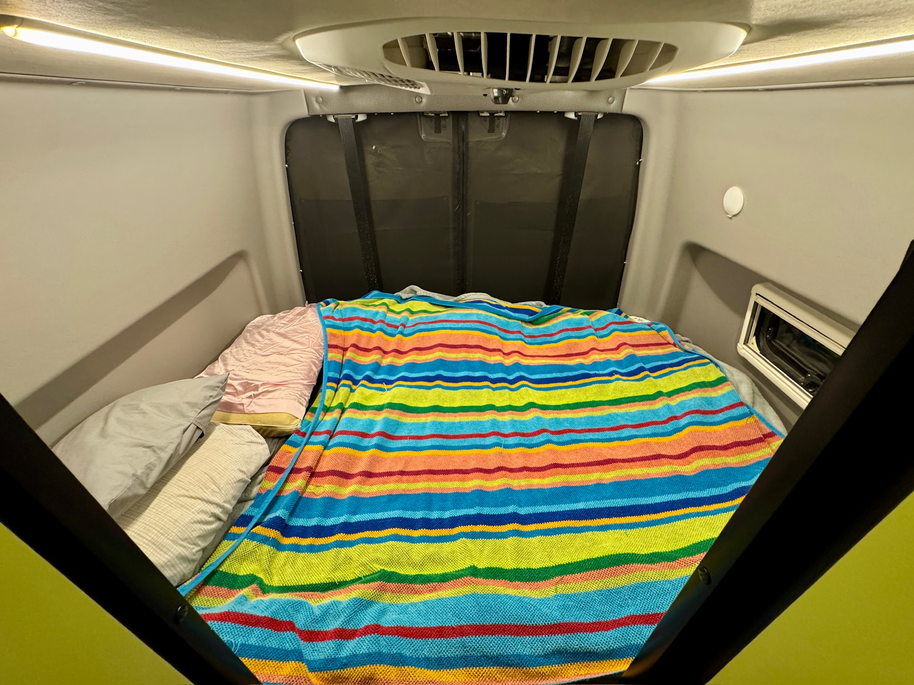
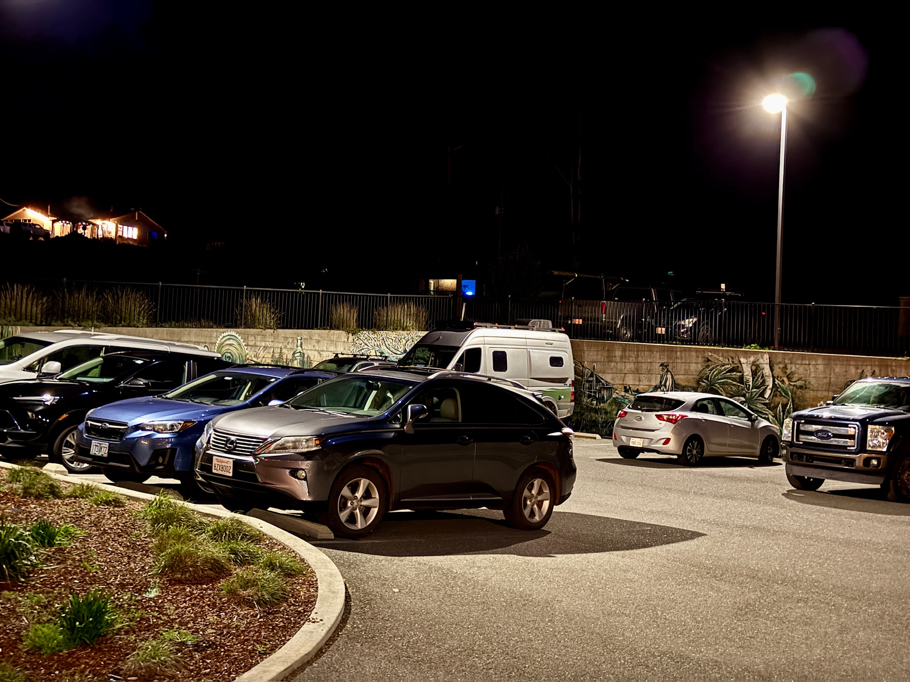
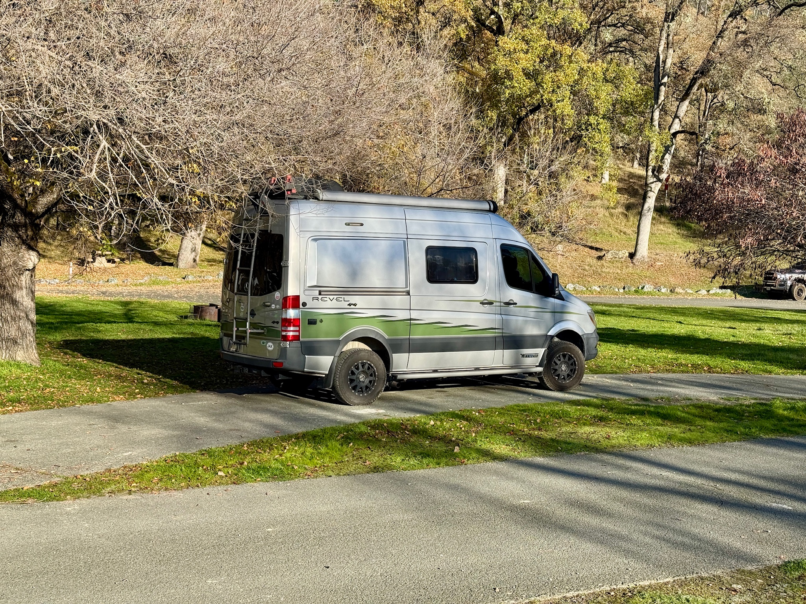

PourHouse hits the road as a full-time rig
Spencer called (again - lol!) and invited us to SF for Thanksgiving. On the way, we joined Harvest Hosts - a service that matches small business owners with parking for rigs like PourHouse. We patronize the business and then camp for ‘free’. Everybody wins. We visited Petrified Forest, and stopped in Palm Springs to see Steve and Buddy again. We made fairly direct time and we were camped in urban SF on the Pacific coast - an easy Uber ride to Ria and Spencer's apartment by Thanksgiving.
We spent all of December in NorCal. Visiting CA-1 when the sun was out, or hiding on US-101 in the Redwoods on cloudy days. We visited the city to see Ria and Spencer, and we took a several day break to cat sit for Rebecca and Chris. During this break, we upgraded the van’s suspension system - Colorado had made it clear that PourHouse was not ready for Alaska.

The California coast left us speechless, again
In Ivan, we drove the entire highway North to South. We were slow, we stopped at every overlook. But this was different. Now we were living here. We could spend hours at the beach reading, or wander into the redwoods for a lunch hike, or search out Forest Service roads for some 4x4 driving. We lived off-grid, we lived in sea-side campgrounds, we stayed at wild Harvest Hosts - we were wandering around northern California.
Spencer and Ria were building their own rig, Big G. We got to visit the Mendocino National Forest to camp together. We crossed Bear Creek - PourHouse’s first water crossing. Ria and Spencer also got engaged while we were in the area, leading to an opportunity to meet Ria’s parents in Santa Rosa.
By January, we turned south and then east
We headed to Anza-Borrego State Park in southern California. We visited Slab City, lapped the Sultan Sea, slept in the desert, witnessed the beginning of a desert super bloom due to heavy November rains, and toured Joshua Tree. Of course, we didn’t pass through without a stop to see Steve and Buddy.
We stopped for another visit to Death Valley. We were excited to smash the 4x4 button and visit the hard-to-reach places that we had missed with Ivan. Unfortunately, that didn’t happen. The same rains that hammered us in northern California, gave us a super bloom in Anza-Borrego, also washed out much of Death Valley’s 4x4 routes. Fortunately, these massive wash beds expose rocks that have been hidden since forever. We got to see reflective water in Manly Lake. We had a ball hiking and playing in the park.

We spent three weeks wandering east across Arizona
By the time we reached Arizona, the PourHouse was high-functioning and the travel was easy. We were using Google Maps proficiently to find off-grid camping. It’s simply an easier task in the desert than it is in the forest. We camped a week at a time off-grid - twice! We visited Kofa National Wildlife Refuge, camped before and after Sedona, visited Roosevelt Lake, drove the Apache Trail, looked for tarantulas in Saguaro, and slept in the Las Cienegas National Conservation Area.
The vegetation from California to Arizona changes so quickly, and in some cases so completely. We took to taking short hikes from our campsite to study local cactus varieties - many of which were flowering.

It’s going to be how cold?!
As we entered New Mexico, we started seeing weather reports predicting an ice storm through central Texas. We were due to meet family in San Antonio. What should we do - sit here and wait for the storm to pass, or front run it? We decided to front run the storm. Our weather information showed Loredo as the warmest place we could be without crossing to Mexico. We were trying to avoid winterizing the van while we were underway. We hid from the weather in Laredo for three nights, including our first showers at a truck stop! Once the storms passed, we enjoyed a visit with Cassie’s cousin, Michelle.
We’re always searching for new frontiers.
As we continued east, we determined that we had unscheduled time, and we needed a plan to fill it. We decided to explore the Miss-Lou region - this is the area north of New Orleans where the Mississippi River divides Mississippi and Louisiana. Fortunately, it was also Mardi Gras shoulder season! We got to experience Mardi Gras like real locals without the hassles of the big city. We camped in really wonderful national forests and parks.
All expeditions must come to an end…
We pressed on to the Florida panhandle, roads and spaces that we know quite well. Cassie did make a side trip to Cincinnati by plane. David got to camp in central Florida for two nights, alone in the wild. Our Florida arrival also meant that we had completed another West to East coast-to-coast drive.
We still have a list of modifications and improvements for the van - we’re likely to have an active upgrade list for the rest of our ownership. PourHouse has proven itself on the open road. It has reliably provided everything we need to expand our travel horizons.